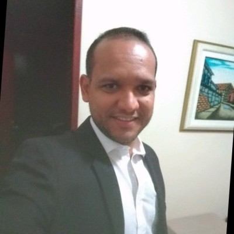

Lucas Guirra
Engenheiro Eletricista /
+74 99956 7365 |
SOBRE
Profissional com mais de 15 anos de experiência na área de atuação no Sistema Elétrico de Potência - SEP. |
|
SkillsTécnico fiscal de IP Técnico Líder de Turno Eletricista III Técnico Eletroeletrônico Industrial |
NoçõesHTML CSS POWER BI MS PROJECT AUTOCAD 2D e 3D |
Formação
Universidade Norte do Pará, UNOPAR
EducaEAD
DEV DE SUCESSO - em andamento
|
Ultimos Projetos |
Experiência Profissional
Coelba Companhia de Eletricidade do Estado da Bahia
|
|